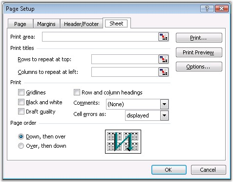

MS Excel enables to customize the print settings through the following options.
· Print Area
· Print Titles
· Printing Options
· Page Order

Figure 116: Page Setup - Sheet
This section explains the XlsIO's support for setting these options through simple APIs.
Print Area
The Print Area specifies the range of cells to be printed. You can set the printing range through the PrintArea property.
|
[C#]
//Sets printing range sheet.PageSetup.PrintArea = "$G$7:$K$9,$G$11,$H$12,$I$13,$J$14"; |
|
[VB.NET]
'Sets printing range sheet.PageSetup.PrintArea = "$G$7:$K$9,$G$11,$H$12,$I$13,$J$14"; |
Print Titles
MS Excel provides an option to repeat rows and columns, so that the labels will be displayed on every page that it takes to print the sheet. This can be selected through the Sheet tab of the Page Setup dialog box.
XlsIO allows setting these titles through the APIs discussed in the following code.
|
[C#]
sheet.PageSetup.PrintTitleColumns = "$B$1:$C$65536"; sheet.PageSetup.PrintTitleRows = ""; |
|
[VB.NET]
sheet.PageSetup.PrintTitleColumns = "$B$1:$C$65536" sheet.PageSetup.PrintTitleRows = "" |
Print Options
There are other settings that can be used to customize the Print options. They are as follows.
Grid Lines
These are the gray lines that separate the cells. Checking the box will enable them to print. These can be enabled/disabled through XlsIO by using the PrintGridlines property of IPageSetup interface.
Headings
Row and column headings are the row numbers and the column letters. Checking the box enables them to print in MS Excel. XlsIO has the option to enable/disable headings through the PrintHeadings property of IPageSetup. Remember, headings are not the same as the labels created.
Color
Excel allows to set the colors for printing. You can print a sheet without colors by using the BlackAndWhite property of the IPageSetup interface in XlsIO.
Quality
Excel provides options to toggle the quality by using the "DraftQuality" option. Draft quality is a fast, but not a crisp print quality. XlsIO allows to enable this option through the Draft property of the IPageSetup interface. You can also set the print quality that controls the dpi by using the PrintQuality property.
Comments
Comments are little notes that you can attach to cells. They can be printed all together at the end of the sheet, or within the sheet, or not at all. This can be set through XlsIO by using the PrintNotes property.
Page Order
Excel allows to set the page order in which the sections of a worksheet should be printed, when it does not fit on one paper page. The default option is DownThenOver.
The other option, OverThenDown, prints the cells across the top of the sheet, first, and then moves down to print the next set of rows.
XlsIO allows to set the print direction as illustrated in the following code example.
|
[C#]
// Set direction of printing. workbook.Worksheets[0].PageSetup.Order = ExcelOrder.DownThenOver; |
|
[VB.NET]
' Set direction of printing. workbook.Worksheets[0].PageSetup.Order = ExcelOrder.DownThenOver |